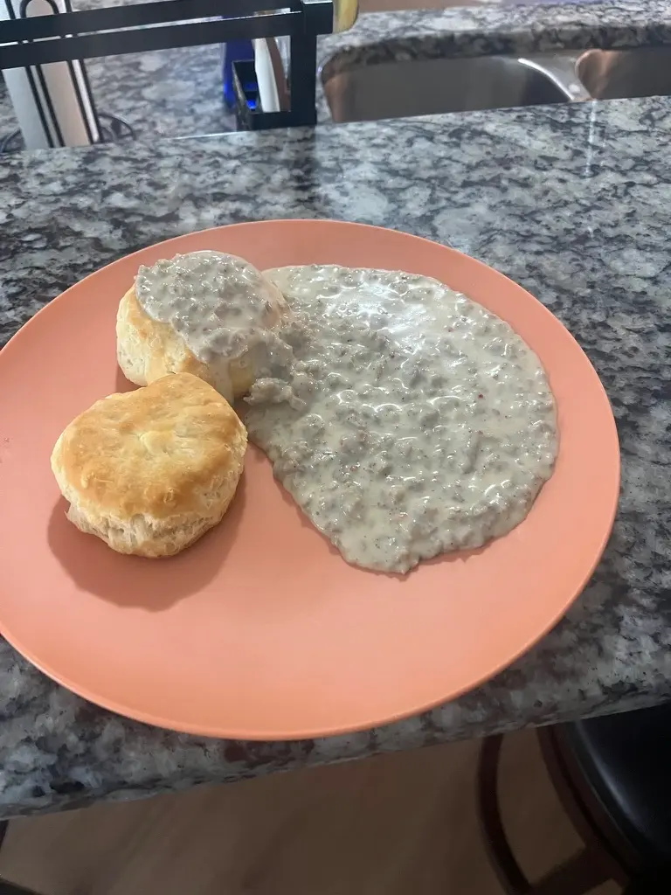

This recipe is for when you want something that is relatively simple and easy to make.
| Prep Time | Bake Time | Cook Time | Servings |
|---|---|---|---|
| 6 mins | 25 mins | 15 mins | 6 |
Ingredients
- 6 frozen biscuits (you can make your own if you want).
- 16 oz of breakfast sausage or chorizo
- 2 cups of milk
- 2 tbsp of flour
- 2 tsp salt
- 2 tsp pepper
- 1 tsp red pepper flakes
Instructions
- Preheat your oven to 375 degrees.
- When adequately heated, put your biscuits on a square pan or aluminum foil and bake for 25 minutes (or according to instructions).
- While the biscuits are baking, get out a pot and turn it to medium high heat.
- Put your sausage in the pot and cook until brown.
- When the sausage is browned, put your flour in and mix until the sausage and flour are combined.
- Turn the heat to medium low and then, add your two cups milk. Go slowly and stir.
- When you are finished, turn the heat to low and let it simmer.
- When your biscuits are done, plate them and your sausage gravy.
- Enjoy!